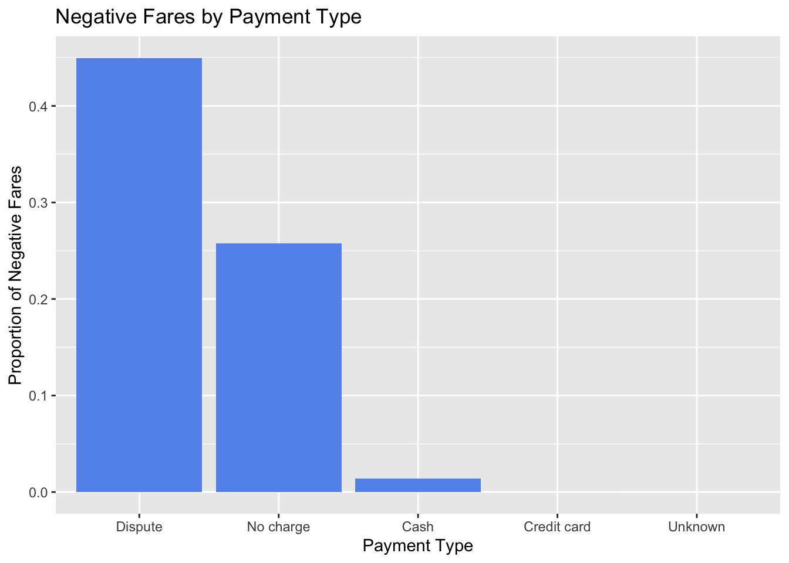
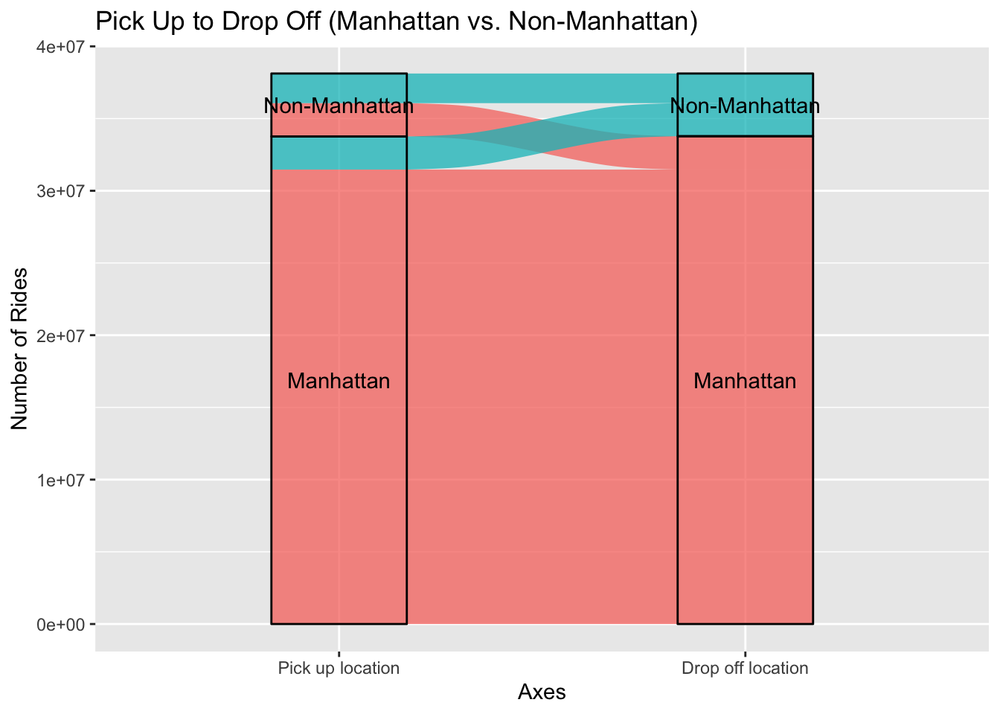
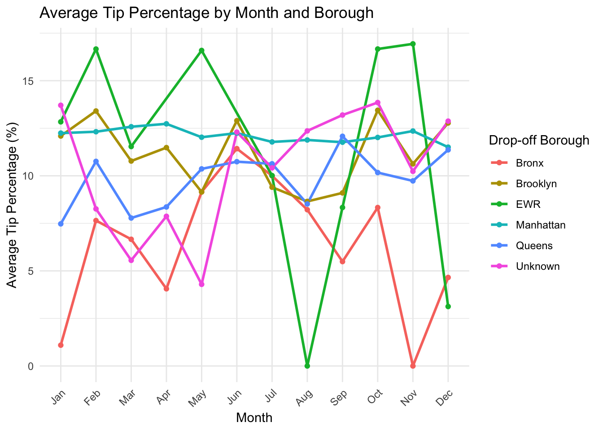

For the following scatterplots we used a random subsample of the data due to the full dataset being too large (over 38 million rows). Upon plotting fare_amount by trip_distance we found that there were distinct patterns within the scatterplot. We used RatecodeID (the final rate code in effect at the end of the trip) and payment_type to illuminate these patterns.
Code
# preprocessingset.seed(123)path <-'data/raw'filenames <-list.files(path)# Use open_dataset to create a Dataset objectmerged <-open_dataset(paste0(path, '/', filenames))merged <-as.data.frame(merged)# look up table for locationIDs and boroughszone_lookup <- readr::read_csv('data/preprocess/taxi_zone_lookup.csv')
Rows: 265 Columns: 4
── Column specification ────────────────────────────────────────────────────────
Delimiter: ","
chr (3): Borough, Zone, service_zone
dbl (1): LocationID
ℹ Use `spec()` to retrieve the full column specification for this data.
ℹ Specify the column types or set `show_col_types = FALSE` to quiet this message.
In general, there was a positive linear relationship between fare_amount and trip_distance. However, JFK alone had a mostly constant fare, regardless of distance. Additionally, some trips with the standard rate were negative and appeared to have a negative linear relationship between the two variables. Lastly, a number of rides with negotiated fares appear to have not gone anywhere (trip distance = 0).
Using the payment_type variable, we saw that the negative fares tended to result from instances where there was a dispute or no charge was made.
Code
# add column for payment type labelmerged_edit <- merged_edit |>mutate(payment_type_label =case_when(payment_type ==0~"NA", payment_type ==1~"Credit card", payment_type ==2~"Cash", payment_type ==3~"No charge", payment_type ==4~"Dispute", payment_type ==5~"Unknown"))# summarise by negative farenegative_fares_payment_type <- merged_edit |>mutate(negative_fare =ifelse(fare_amount <0, 1, 0)) |>group_by(payment_type_label) |>summarise(percent_negative =mean(negative_fare))negative_fares_payment_type$payment_type_label <-as.factor(negative_fares_payment_type$payment_type_label)# negative fares by payment typeggplot(negative_fares_payment_type |>filter(payment_type_label !="NA"), aes(x =fct_reorder(payment_type_label, -percent_negative), y = percent_negative)) +geom_col(fill ="cornflowerblue") +labs(x ="Payment Type",y ="Proportion of Negative Fares",title ="Negative Fares by Payment Type")

3.2 Pick Up and Drop Off Locations
Using an alluvial diagram, we saw that the vast majority of rides were within Manhattan. A small fraction of rides starting in Manhattan ended outside of Manhattan, while about half the rides that started outside Manhattan ended in Manhattan. We broke this down further by borough using a grouped bar plot. After Manhattan, the most rides started and ended at airports, followed by Brooklyn. Interestingly, more rides started at the airports than ended there and more rides ended in Brooklyn and Queens than started there.
Code
# use look up table to get IDs in each boroughAirport_locIDs <-c(1, 132, 138)boroughs <- zone_lookup$Borough |>unique()for (i in1:length(boroughs)) { b <- boroughs[i]if (b =="N/A"| b =="Unknown") {next }if (b =="Staten Island") { b <-"StatenIsland" }assign(paste0(b, "_locIDs"), (zone_lookup |>filter(Borough == b, !LocationID %in% Airport_locIDs))$LocationID)}# label pick up and drop off locations by boroughmerged_edit <- merged_edit |>mutate(PUBorough =case_when(PULocationID %in% Airport_locIDs ~"Airport", PULocationID %in% Queens_locIDs ~"Queens", PULocationID %in% Bronx_locIDs ~"Bronx", PULocationID %in% Manhattan_locIDs ~"Manhattan", PULocationID %in% StatenIsland_locIDs ~"Staten Island", PULocationID %in% Brooklyn_locIDs ~"Brooklyn"))merged_edit <- merged_edit |>mutate(DOBorough =case_when(DOLocationID %in% Airport_locIDs ~"Airport", DOLocationID %in% Queens_locIDs ~"Queens", DOLocationID %in% Bronx_locIDs ~"Bronx", DOLocationID %in% Manhattan_locIDs ~"Manhattan", DOLocationID %in% StatenIsland_locIDs ~"Staten Island", DOLocationID %in% Brooklyn_locIDs ~"Brooklyn"))
Code
# counts for each different pairing of pick up and drop off locationsPU_DO_alluvial <- merged_edit |>group_by(PUBorough, DOBorough) |>summarise(Freq =n())
`summarise()` has grouped output by 'PUBorough'. You can override using the
`.groups` argument.
Code
# label as Manhattan or not ManhattanPU_DO_alluvial_lumped <- merged_edit |>mutate(PUManhattan =ifelse(PUBorough =="Manhattan", "Manhattan" , "Non-Manhattan")) |>mutate(DOManhattan =ifelse(DOBorough =="Manhattan", "Manhattan", "Non-Manhattan")) |>group_by(PUManhattan, DOManhattan) |>summarise(Freq =n())
`summarise()` has grouped output by 'PUManhattan'. You can override using the
`.groups` argument.
Code
# remove NAsPU_DO_alluvial_lumped <- PU_DO_alluvial_lumped |>filter(PUManhattan !="NA", DOManhattan !="NA")# alluvial diagram of rides (Manhattan vs. non-Manhattan)ggplot(PU_DO_alluvial_lumped, aes(axis1 =fct_reorder(as.factor(PUManhattan), Freq, mean),axis2 = DOManhattan,y = Freq, fill = DOManhattan)) +geom_alluvium(alpha = .75) +geom_stratum(fill =NA) +geom_text(stat ="stratum", aes(label =after_stat(stratum))) +scale_x_discrete(limits =c("Pick up location", "Drop off location"), name ="Axes") +labs(y ="Number of Rides",title ="Pick Up to Drop Off (Manhattan vs. Non-Manhattan)") +guides(fill ="none") +scale_y_continuous(labels = scales::comma)
Warning in to_lodes_form(data = data, axes = axis_ind, discern =
params$discern): Some strata appear at multiple axes.
Warning in to_lodes_form(data = data, axes = axis_ind, discern =
params$discern): Some strata appear at multiple axes.
Warning in to_lodes_form(data = data, axes = axis_ind, discern =
params$discern): Some strata appear at multiple axes.

Code
# reformatting counts by location for grouped bar plotPU_freq_loc <- PU_DO_alluvial |>group_by(PUBorough) |>summarise(Freq =sum(Freq)) |>mutate(Type ="Pick Up")colnames(PU_freq_loc) <-c("Borough", "Freq", "Type")DO_freq_loc <- PU_DO_alluvial |>group_by(DOBorough) |>summarise(Freq =sum(Freq)) |>mutate(Type ="Drop Off")colnames(DO_freq_loc) <-c("Borough", "Freq", "Type")PU_DO_freq <-rbind(PU_freq_loc, DO_freq_loc) # ride frequency by pick up and drop off locationggplot(PU_DO_freq |>filter(Borough !="NA"),aes(x =fct_reorder(as.factor(Borough), -Freq),y = Freq,fill =factor(Type, levels =c("Pick Up", "Drop Off")))) +geom_col(position ="dodge") +labs(x ="Borough",y ="Number of Rides",title ="Number of Rides by Location",fill ="Location Type") +scale_fill_manual(values =c("coral2", "coral4")) +scale_y_continuous(labels = scales::comma)
Rows: 265 Columns: 4
── Column specification ────────────────────────────────────────────────────────
Delimiter: ","
chr (3): Borough, Zone, service_zone
dbl (1): LocationID
ℹ Use `spec()` to retrieve the full column specification for this data.
ℹ Specify the column types or set `show_col_types = FALSE` to quiet this message.
While analyzing the location data, we noticed a “Service Zone” column in our location lookup table with values such as “Boro Zone” and “Yellow Zone.” After revisiting the NYC.gov page where we sourced our data, we discovered it listed additional data for green taxis. Although this data is not included in our analyses, green taxis, known as “Boro Taxis,” are part of a separate fleet that operates exclusively outside a large portion of Manhattan. These taxis were introduced to address the unequal access to legal taxi services, as 95% of traditional yellow taxis pick up riders south of 96th Street.
To explore whether this disparity persists in 2023, we created a choropleth plot to visualize yellow taxi ride pickups by Manhattan neighborhood. The plot reveals that ride pickups are still disproportionately concentrated south of 96th Street, with the Upper East Side having the most pickups.
3.3 Ride Frequency by Month
The most rides occurred in May and October. Generally, rides were highest in the spring and fall months, decreasing during winter and summer months. There are clear dips in both the bar plot and line plot during January-February and July-September.
Code
# add column for monthmerged_edit <- merged_edit |>mutate(PUMonth_num =month(as.POSIXct(tpep_pickup_datetime))) |>mutate(PUMonth =case_when(PUMonth_num ==1~"Jan", PUMonth_num ==2~"Feb", PUMonth_num ==3~"Mar", PUMonth_num ==4~"Apr", PUMonth_num ==5~"May", PUMonth_num ==6~"Jun", PUMonth_num ==7~"Jul", PUMonth_num ==8~"Aug", PUMonth_num ==9~"Sep", PUMonth_num ==10~"Oct", PUMonth_num ==11~"Nov", PUMonth_num ==12~"Dec"))merged_edit$PUMonth <-fct_reorder(as.factor(merged_edit$PUMonth), merged_edit$PUMonth_num, mean)# monthly ridesmonthly_rides <- merged_edit |>group_by(PUMonth) |>summarise(Freq =n())# pick up month vs. number of ridesggplot(monthly_rides, aes(x = PUMonth, y = Freq)) +geom_col(fill ="chartreuse4") +labs(x ="Month",y ="Number of Rides",title ="Total Rides per Month") +scale_y_continuous(labels = scales::comma)
3.4 Tipping
3.4.1 Distribution of Tip Amounts
We found that Manhattan tended to have the most outlying values. Queens and the Bronx had the widest spread of tipping percentages, with larger interquartile ranges and outliers. Overall, tip percentages are predominantly below 50%, with a significant concentration in the 10-20% range.
We also recreated a graph from the following post: https://iquantny.tumblr.com/post/107245431809/how-software-in-half-of-nyc-cabs-generates-52
Looking at observations for rides payed for with credit card (since tips for cash payments were not recorded), we saw that there were clear peaks for 0%, 20%, 25%, and 30% tips. These may correspond to the default options for tipping on credit card readers in taxis. This result was similar to what was found in the article.
Code
# cols to use for summing up total fare without tiptotal_charge_cols <-c("fare_amount", "extra", "mta_tax", "tolls_amount", "improvement_surcharge", "congestion_surcharge", "airport_fee")# credit cards only for tip, removing negative fares, and unknown/NA locationsmerged_sub_tip <- merged_edit |>select(all_of(c(total_charge_cols, "tip_amount", "payment_type", "payment_type_label", "PUBorough", "DOBorough"))) |>filter(payment_type_label =="Credit card", fare_amount >0)# calculate tipsmerged_sub_tip <- merged_sub_tip |>mutate(tip_percentage =round(tip_amount/(fare_amount + extra + mta_tax + tolls_amount + improvement_surcharge + congestion_surcharge + airport_fee)*100, 0))# summarise by tip percent (integer values)merged_tip_summarized <- merged_sub_tip |>group_by(tip_percentage) |>summarise(Freq =n())# plot frequencies for each tip percentggplot(merged_tip_summarized |>filter(tip_percentage <50), aes(x = tip_percentage, y = Freq)) +geom_col() +labs(x ="Tip Percentage",y ="Number of Tippers",title ="Distribution of Tip Percentages")

3.4.2 Tipping by Trip Distance and Location
The majority of trips cover shorter distances (less than 10 miles) and cluster around tip percentages between 10% and 20%, regardless of the borough. However, a few outliers show higher tip percentages exceeding 50%, especially for shorter trips. For longer trips (over 20 miles), tip percentages tend to stabilize or decrease. This suggests that tipping behavior is more variable for shorter trips but converges to a narrower range for longer trips. In addition, many riders tend to tip in standard percentages, such as 20%, as evidenced by the horizontal lines at these tipping levels across various trip distances.
Tipping percentages for most boroughs are concentrated between 10% and 15%, except for notable outliers like the Bronx which has variable average tipping percentages across different months. Seasonal trends are not strongly evident.
Code
tips_sample <- tips |>filter(trip_distance <500) |>group_by(PUMonth) |>slice_sample(n =700) |>ungroup()average_tips <- tips_sample |>group_by(PUMonth, DOBorough) |>summarize(avg_tip_percent =mean(percent_tip, na.rm =TRUE), .groups ="drop")ggplot(average_tips, aes(x = PUMonth, y = avg_tip_percent, color = DOBorough, group = DOBorough)) +geom_line(size =1) +geom_point() +labs(title ="Average Tip Percentage by Month and Borough",x ="Month",y ="Average Tip Percentage (%)",color ="Drop-off Borough") +scale_x_discrete(limits =c("Jan", "Feb", "Mar", "Apr", "May", "Jun", "Jul", "Aug", "Sep", "Oct", "Nov", "Dec")) +theme_minimal() +theme(axis.text.x =element_text(angle =45, hjust =1))
Warning: Using `size` aesthetic for lines was deprecated in ggplot2 3.4.0.
ℹ Please use `linewidth` instead.